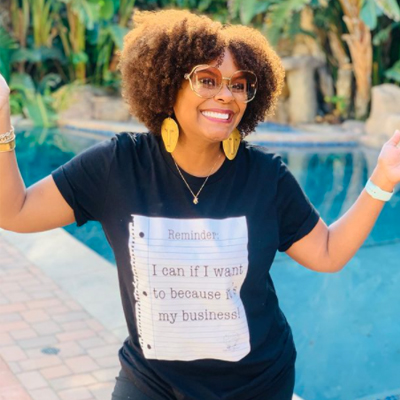
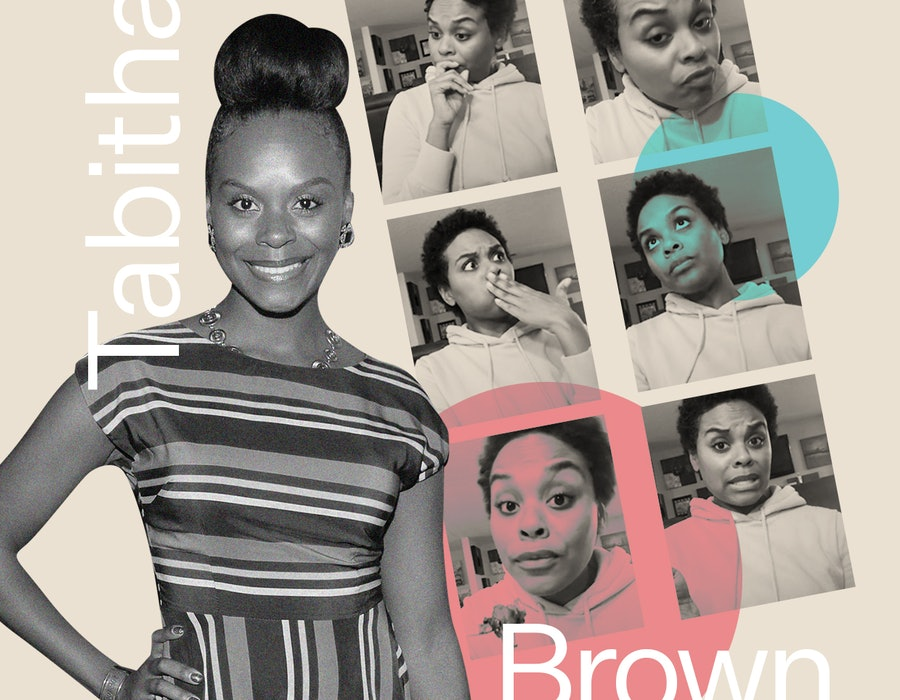
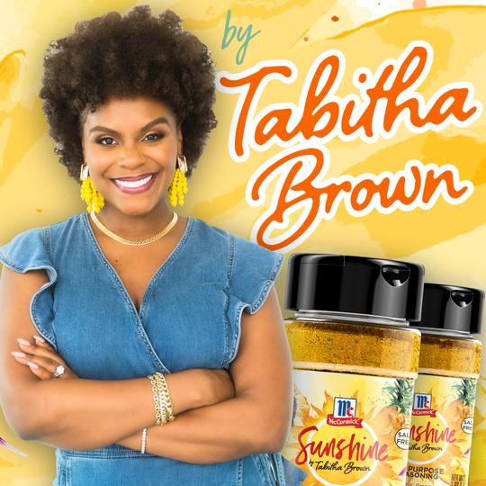
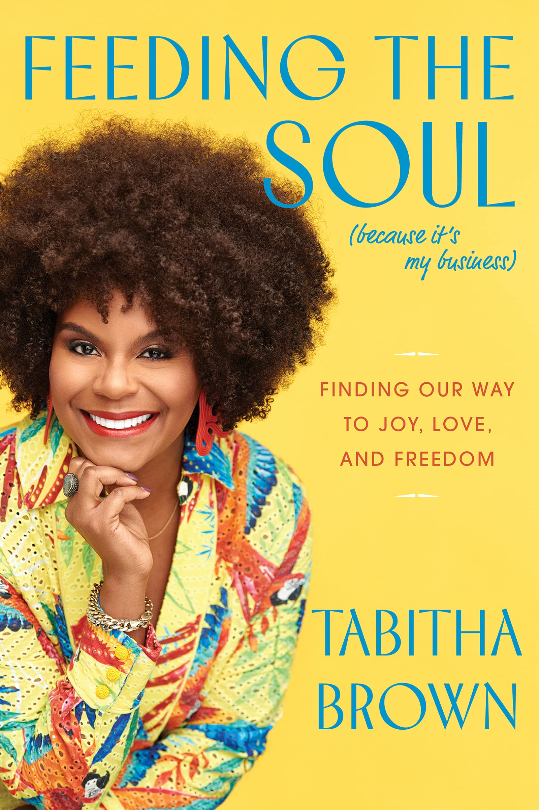
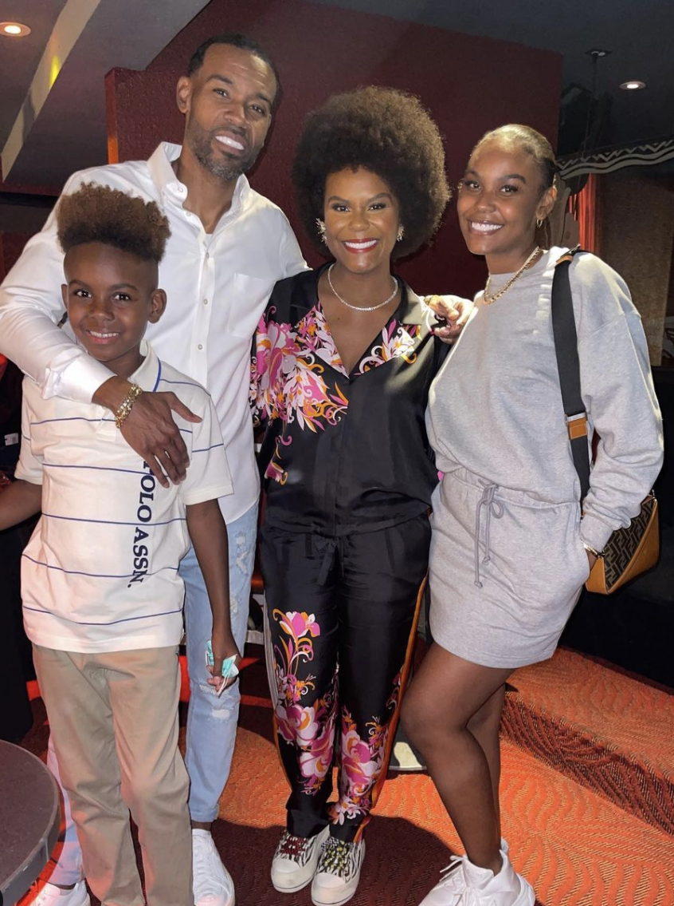

Tabitha Bonita Brown (born February 4, 1979) is an American actress, author, and social media personality. She creates online video content incorporating veganism, humor and motivational speaking. Brown has over four million followers on TikTok and over three million followers on Instagram as of July 2021. She has been described by HuffPost as "America's Mom" and her content has been deemed by critics as "comforting" and "calming".
Brown was born in Eden, North Carolina. She was raised in Stoneville, but grew up and did schooling in Eden. She started studying fashion design at Miami International University of Art & Design, but dropped out at age 19 and moved to Laguna Niguel, California. After struggling financially, she returned to North Carolina, this time moving to Greensboro, where she lived for five years.
In 2002, Brown got a job as the co-host of a local late-night show, where she interviewed celebrities who performed at Greensboro Coliseum Complex. In 2004 she moved with her husband to Los Angeles where she tried out stand-up comedy. After failing to land as a TV actress, Brown spent five years working at a Macy's in Century City. After six months of being settled in, Brown began bouncing between North Carolina and Los Angeles to care for her mother who had developed ALS.
Brown had spent three years taking care of her mother. Following her mother's death in 2007, Brown began her career acting small roles in several indie films and direct-to-video films. Brown subsequently developed chronic pain and fatigue and could not work for a year. Brown was introduced to veganism after her daughter had suggested adopting it to help with her recovery.
In late 2017, Brown was running out of disability insurance funds, which led to her becoming an Uber driver in October 2017, in order to make ends meet as a "struggling" part-time actress. Her video review from December 2017 of a Whole Foods Market vegan BLT sandwich went viral, after which the company hired her as a brand ambassador to travel the country. In early March 2020, she created a TikTok account on which she began sharing vegan recipes, cooking tips, family moments, and encouraging advice, amassing 2 million followers in the space of five weeks. Brown had also been broadcasting live cooking shows and product reviews on Facebook live since early 2018.
 In July 2021 Tabitha partnered with McCormick® Brand to release an exclusive new seasoning just in time for the summer called McCormick Sunshine All Purpose Seasoning. The blend is a salt-free, Caribbean-influenced, bright, warm blend, inspired by Tabitha's joyful personality and vegan recipes. In late September 2021 Brown releaed her first book "Feeding the Soul (beacause it's my business): Finding our way to Joy, Love, and Freedom" and has become #1 New York Times Bestseller.
Brown is married to Chance Brown, who was a police officer for the Los Angeles Police Department, with whom she co-hosts Fridays with Tab & Chance on IGTV. Together, they have two children; Choyce and Queston. They reside in Los Angeles, California.
